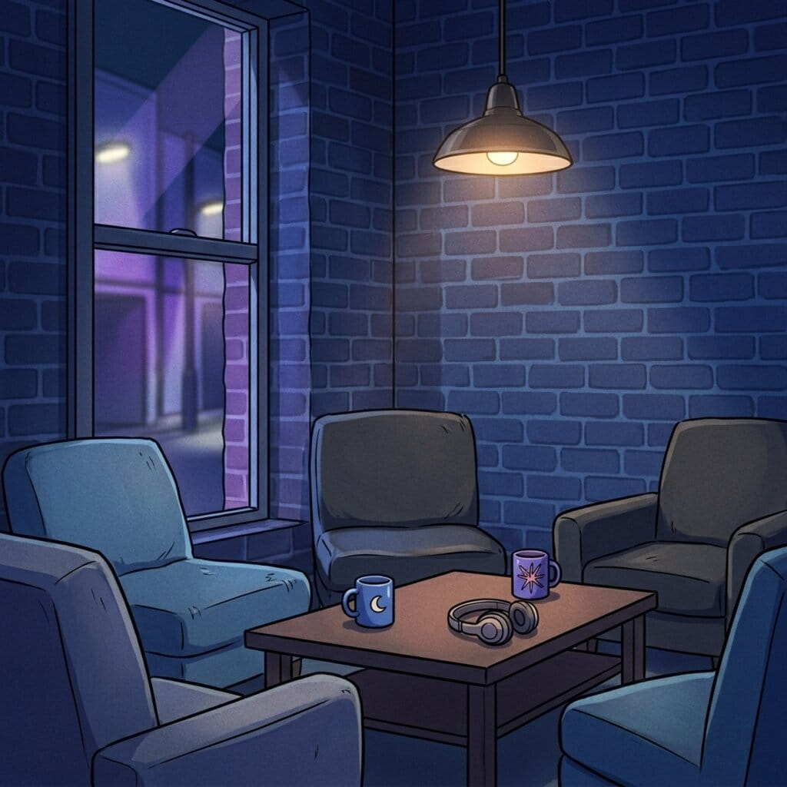
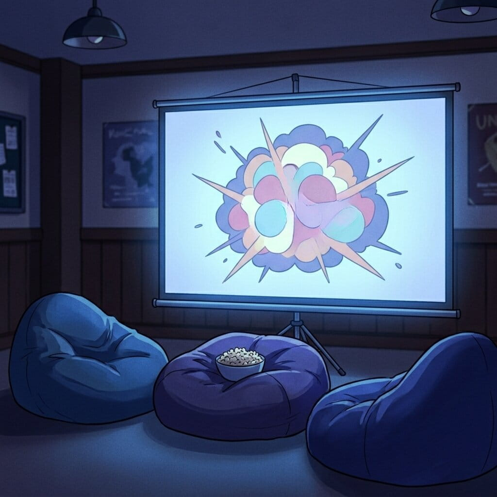

Meetups & Discussions
Every week, SAMMA members gather to share recommendations, debate episode theories, and chat about all things anime. Whether it's a casual coffee catch-up or a themed discussion night, there's always something on.
Nomash Anime Society — Nomash University's Official Anime Club
Whether you're a lifelong fan or just curious about anime, SAMMA is your home on campus. Join us for weekly screenings, social meetups, and events throughout the year.

Every week, SAMMA members gather to share recommendations, debate episode theories, and chat about all things anime. Whether it's a casual coffee catch-up or a themed discussion night, there's always something on.

From classic masterpieces to the latest seasonal titles, SAMMA hosts regular group screenings on campus. Bring your friends, grab some snacks, and enjoy anime the way it was meant to be — together.

From group meetups and trivia nights to convention trips and fundraisers, SAMMA runs events all year round. Stay tuned to our socials and this page for the latest announcements.
SAMMA isn't just a club — it's a community built around a shared love of anime and manga culture. Here's a taste of what we get up to throughout the university year.
Every week we screen a selected anime series or film on campus, voted on by our members. From mainstream classics to current season hits, there's something for everyone.
Themed discussion evenings where members dive deep into a series, genre, or cultural topic. Great for sharing opinions and hearing perspectives you hadn't considered.
Test your anime knowledge in our fun trivia nights, or go head-to-head in anime and Japanese game nights. Have fun with prizes and laughs for everyone.
From casual creative hangouts to focused art sessions, SAMMA celebrates the creativity of our members, everyone is welcome to join, share ideas, and create together each week.
We organise group meetups to anime and pop culture conventions, and weekly casual meetups on campus to hang around as a community.
SAMMA encourages involvement with others through our forum discussion, cultural awareness events, and collaborations with other university clubs and student organisations.
Got a question, want to start a discussion, or just have something to say? Post a topic below and join the conversation — or check out what other SAMMA members are talking about right now.
Forum Posts